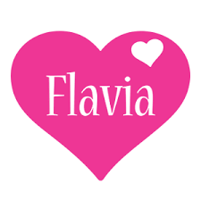

As Melhores e mais badaladas notícias sobre Flávia's
Flávia Alessandra
e Otaviano Costa parecem conseguir unir o útil ao agradável, em vários dos trabalhos que costumam fazer juntos. Nesse fim de semana, não foi diferente. Ainda no último sábado, o casal chamou a atenção dos admiradores que possui, no Instagram, depois de aparecer, em foto postada no perfil do apresentador, esbanjando charme e sintonia, antes de mais um compromisso profissional. Usando um vestido todo estampado, que combinou com sandálias de salto alto, a atriz foi registrada no colo do maridão, que, por sua vez, vestia um traje social mais claro, que combinou com sapatos pretos. Ambos também apareceram, na frente das câmeras, olhando para o que parecia ser a janela de um quarto. "Fim de férias! Casal apresentando big job da Profarma! Enquanto não começa, resolvemos agir naturalmente, no quarto do hotel", chegou a escrever Otaviano, para legendar tal clique, que, claro, logo caiu nas graças dos internautas, já rendendo, até o presente momento, mais de 80 mil curtidas. "O barão e a baronesa", chegou a escrever uma seguidora, nos comentários da postagem, antes mesmo de outra chegar a dizer "Lindos. Casal perfeito, aos olhos de Deus". Vale lembrar que, há apenas alguns dias, o apresentador e a at aproveitaram uma viagem que fizeram, com a família, à cidade de Las Vegas, para casar novamente, compartilhando tudo com os fãs, também por meio da internet. É muito amor para um só casal, ainda mais felicidades para vocês!As Guloseimas Flavia fazem sucesso no Brasil inteiro
Aos 94 anos de idade, John B. Goodenough já poderia ter se considerado satisfeito com o legado que deixou para a humanidade: a criação das baterias de íon-lítio. No entanto, o professor da Universidade do Texas continua ativo e, recentemente, anunciou a criação de uma alternativa melhor à sua antiga invenção. Em parceria com a pesquisadora sênior Maria Helena Braga, da Cockrell School, e de um pequeno time de cientistas, ele ajudou a criar uma bateria em estado sólido mais segura que as opções de íon-lítio. A novidade também é capaz de armazenar o triplo de energia, que pode ser carregada em questão de poucos minutos (em vez de horas). A solução também é capaz de suportar uma quantidade muito grande de ciclos de carga e descarga.
Significado do Nome

Flávia é um nome que simboliza perfeição, principalmente no modo como constrói a sua vida, em que as peças do quebra-cabeça
sempre precisam se encaixar para ela encontrar a felicidade que está buscando. Flávia tem muita facilidade de utilizar a sua praticidade no dia a dia, não se preocupando com coisas boas que podem atrapalhar o andamento de seu planejamento diário.
O que pode ser um problema, se Flávia não conseguir o que deseja. O nome também representa a vontade de estar em família
em seu lar, com pessoas que realmente lhe querem bem.
As características positivas do nome Flávia vão desde as atitudes justas, odiando seguir um caminho que sabe que é certo,
até o gosto de viver uma aventura para não cair no ócio, que pode ser terrível a Flávia. Por isso que precisa estar
perto de pessoas ativas também. Já os pontos negativos indicam que nem sempre Flávia coloca o pé no chão, vivendo muito no âmbito da ilusão para que atinja seus propósitos fundamentais.
Flávia não leva desaforo para casa e quando é machucada, se torna uma pessoa frágil e melancólica. Mas, quando está feliz,
ela transborda uma energia muito positiva, mesmo quando tem ciúmes da própria família e não gosta de ficar sozinha.
Flávia apenas precisa aceitar mais o que está à sua frente!